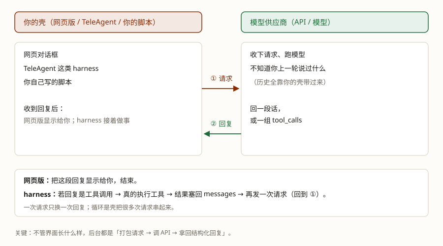

先看清一次「请求 → 回复」，再看它怎么长成一个会循环决策的系统。
你有没有想过："用 AI"和"用 agent"，到底差在哪？
先说个可能反直觉的：你以为在"和模型聊天"，其实是你的软件在给模型供应商的 API 发请求、收回复。网页版和 TeleAgent 都不例外。
同一个模型，套上不同的壳（这层壳有个正式名字：harness）——一个只会一问一答；另一个却能自己查资料、读文件、一步步把活干完，中间不用你盯着。
差别不在模型，在外面那层结构：一个"决定了做、做了再看、看了再决定"的循环，加上给它的一双手、一点记忆。
学完这课，你能：说清"用 AI"和"用 agent"差在哪；知道网页版和 harness 后台都是同一次请求/回复；分清模型、harness、agent 三个词；说清循环怎么转、什么时候停，工具从哪来，记忆按产品怎么存·取·管。
先记住两件事：一次 API 调用＝一次请求换一次回复；agent 多出来的，就是把这些请求串成一个循环：推理 → 行动 → 观察 → 再推理，直到任务完成、或者撞上护栏。
本课先把这两件事讲清楚；下一课把循环写成代码、用真模型跑起来。后面每一课，都是往这个循环里加零件。
先看两个场景，都是同一句话："查明天上海到北京最便宜的机票，合适就订。"
你打开 ChatGPT、豆包这类网页，把这句话打进去。它回你一段文字：建议看哪几家航司、什么时段便宜、怎么比价。然后——到此为止。查航班、比价、付款，还是你自己来；它可能能上网搜两下，但那是产品里预置的能力，你没法把"订票"接进去。
你把同一句话交给它，然后去倒杯水。它自己查航班（看到 23 个）→ 决定只看直飞、按价格排 → 调比价、下单 → 回来："订好了，620 元那班。要不要加 20 元选个靠窗？"
直观上，两者的区别看起来很大；但从和模型打交道的角度看，它们只是用的客户端软件不同——网页版是浏览器里的客户端，TeleAgent 是装在电脑上的客户端；这类软件在后面的正式名字是壳 / harness。模型可能是同一个，每一次"打包请求 → 调 API → 拿回复"的过程也一样。真正的差别在客户端拿到回复之后：网页版显示给你，harness 可能执行工具、再发一次。
不管界面长什么样，后台都是同一件事：软件把你的输入打包成一个请求，发给模型供应商的接口（API），拿回一段回复，再决定怎么显示、或者接着做什么。你以为在"和模型对话"，实际是你的软件在替你和 API 打交道。

请求和回复都是结构化的数据（通常是 JSON），不是一句人话。请求里装什么？
messages：对话记录，一条一条，带角色（system / user / assistant / tool）；tools：这个壳允许模型用的工具清单（第 7 节展开）；model：用哪个模型，以及温度、最大输出长度这类参数。写成伪代码，一次来回大概长这样：
请求 = {
"model": "deepseek-flash",
"messages": [
{"role": "user", "content": "北京今天多少度？"}
],
"tools": [ ... ] # 可选：这个壳允许用的工具
}
回复 = 调接口(请求) # 一次请求，只换一次回复
# 对循环来说，回复只有两种形状：
{"type": "text", "content": "北京今天 26 度"}
{"type": "tool_calls", "calls": [
{"name": "get_weather", "arguments": {"city": "北京"}}
]}（字段名各家略有出入，形状就这两类。真正的调用第 2 课写。）
这就是"结构化输入输出"：你发过去的是一组字段，不是一句咒语；拿回来的也是一组字段，不是一段自由发挥的散文。壳要按字段判读——看到 text 就当回答，看到 tool_calls 就去执行。
三件事记住：① 一次请求只换一次回复，模型不会自己接着做下一步；② 模型不替你记上一轮，每轮看到什么，全靠壳把 messages 重新发一遍；③ 回复要先看类型字段——是 text 还是 tool_calls，不能当成一段散文来读。
那"自己查、比价、下单"是怎么发生的？一次请求只会回一段话或一组工具调用，不会自己转起来。答案是下一节：壳把很多次请求串成了一个循环。
上一节说过：一次请求只换一次回复。那 agent 多出来的是什么？多出来的是"再来一次"。
网页版：一次请求 → 一段回复 → 显示给你，结束。
TeleAgent：壳拿到回复，发现里面带着"要查航班"的工具调用，就真的去调；把结果塞回 messages，再发一次请求；模型决定接下来做什么（比价、下单）……直到某次回复不再要工具，才把最后那段话交给你。这个"请求 → 看回复 → 做事 → 再请求"的反复，就是 agent 循环（第 4 节拆开讲它怎么转、什么时候停）。
把话说完整：你给 agent 一个目标，它会自己决定"现在该做什么"；做完看到结果，再决定下一步。这个"决定了做、做了再看、看了再决定"的过程，就是 agent 和单次调用最本质的差别。
差别可以收成三点：谁安排下一步（你 vs 它）、它能不能用上你的工具（产品预置的 vs 你能配的）、你要不要盯着（全程在场 vs 交代完就走）。两个场景里跑的甚至可能是同一个模型——差的是外面那层壳，和壳里转的那个循环。
agent 翻车的动静更大：AI 对话答错了，损失是一句废话；agent 答错了，可能是真订错一张票。所以 agent 一定要有护栏——比如下单前先问你一声。这是后面反复出现的零件。
日常说"我装了一个 agent"，严格说装的不是 agent。拆开是三样东西：
所以口语里说的"装一个 agent"，装的其实是 harness；agent 是它跑起来的样子。这层壳里到底装了什么、为什么值得单独拆开看——第 8 课把学过的课全部对号入座进去。
循环长这样：
出口只有一个：某一次回复里，模型不再要求调工具，而是给出一段话。没有"完成"按钮，也没有一个叫 done 的动作——它不调工具了，壳就认为这一轮收尾了。
所以每一轮壳只做一个判断：这次回复是「一段话」还是「要调哪个工具、参数是什么」的结构化数据。前者收尾，后者继续。
如果它一直调工具、一直不收尾，就会卡死在循环里。所以工程上一定要有 护栏：最常见的是「最大步数」，走满就强制停。步数按调用模型的次数算，不是按工具次数——一步里可以调好几个工具（第 2 课真跑会看到）。
但"停"不代表"做对了"：模型可能提前收工（活没干完就说完了），也可能绕圈（一直说还要调）。这两种循环自己判断不了，得靠外面的检查：看 trace、看结果、关键动作让人点头。
第 1 节已经说过：一次调用只换一次回复，模型也不替你记上一轮。所以转圈的不是模型，是 harness：它决定还调不调、调哪个工具，把结果塞回 messages，再发下一次请求。
写成伪代码，就这么几行：
messages = [系统提示, 用户的问题]
工具清单 = [查天气, 列城市] # 每一轮都随请求发出去
for step in range(1, 最多步数 + 1):
reply = 调用模型(messages, 工具清单) # 一次 API 调用，只换回一次回复
if reply 没有要求调工具: # 模型用一段话收尾
return reply.text # ← 循环的出口
messages.append(reply) # 模型说的那句，原样放回
for call in reply.工具调用:
result = 执行工具(call) # ← 这一步是 harness 干的，不是模型
messages.append(工具结果(call.id, result))
raise 超过最大步数 # 护栏：模型一直不收尾那个 return 返回的 reply.text，就是壳最后交给用户的回答。
三件事顺着读一遍：① 出口是"没有工具调用"，不是某个神奇的完成标志；② 每一轮都把全部历史＋工具清单重新发一遍，模型自己不留状态；③ 执行工具、把结果塞回、决定再调一次、走满步数强制停——全是壳的活。模型只负责"下一步做什么"这一个判断。
领域里常用一张地图来拆 agent：规划、记忆、工具，常被叫做三大支柱（出处见 Lilian Weng 那篇《LLM Powered Autonomous Agents》）。三根柱子不是循环之外的三件东西，它们就长在循环上：规划发生在"推理"那一步，工具是"行动"那一步的手段，记忆管"观察到的结果放哪、下次还认不认得"。下面三节一根一根看。
怎么把大目标拆成能一步步执行的子任务？怎么在失败后改主意？
当前上下文里放什么？跨会话的东西怎么存、怎么取回来？
如何让模型"伸出手"去调 API、查库、改文件，并把结果读回来？
大活要拆成能执行的小步：「写一份周报」＝查数据 → 算环比 → 写结论。更难的是另一件事——失败后改主意：查不到上周的数据，就换个来源，或者先算前一周。这两件事的行话叫拆子目标和自我反思（self-reflection）：好的 agent 不是一条路走到黑，而是每走一步都回头看看要不要换条路。翻车的样子：拆得太碎、绕圈子，或者改主意改得太勤，原地打转。
还要分清两件事。规划不等于"思考"：思考是"想"的总称——验算、打草稿都算；规划只是其中管"接下来做什么"的那部分。一次普通回答里也有规划（先列提纲再写），但 agent 的规划多一层：它安排的是接下来动手做什么，还会被行动结果打回来重写——所以才有"改主意"这回事。规划的本事是模型练出来的（"会思考是练出来的"见 LLM 底层 · 第 5 课）；要不要规划、按什么格式、什么时候重来，是外壳定的——壳只能把本事叫出来，给不了它本事。
最原始的工具，就是你自己在程序里写的一个普通函数：
def get_weather(city: str) -> dict:
return {"city": city, "temp_c": 26, "cond": "晴"}但模型看不见这个函数，也调不动它。你得再给模型一张说明卡：名字、一句话说明、参数。模型照着这张卡挑工具、填参数：
{
"name": "get_weather",
"description": "查某个城市今天的天气。返回气温（摄氏度）和天气状况。",
"parameters": {
"type": "object",
"properties": { "city": { "type": "string", "description": "城市名" } },
"required": ["city"]
}
}说明卡是模型挑工具的主要依据：写"什么时候该用、返回什么"，不是写给人看的注释。写得含糊，它就调得不准。
这张卡每一轮都要随请求发出去，不是只发一次。所以工具越多，每一轮为它们付的 token 越多；它们是稳定前缀，能吃缓存（LLM 底层 · 第 3 课），但"稳定"也意味着别在中途增删——一改，前缀就断了。
模型只"说要调"，不执行。它输出的是一段按约定格式写的文字（行话叫 tool_use，OpenAI 那边叫 tool_calls："我要调 X，参数是 Y"）。真正去执行的，是壳里的程序——程序调完，把结果（tool_result）塞回对话，模型才知道发生了什么。所谓"agent 能做事"，全靠这个来回反复转。
为什么非要给它手？因为它伸手去拿的，往往是生来没有的三样东西：现在的信息（今天的航班，模型只学到旧闻）、动手算的能力（它只会吐字）、你公司的数据（它训练时没见过）。
三五个工具没问题，再多就会撞墙：
所以工具后来长出了两个新形状：MCP 把工具做成「标准插口」——写一次，任何支持 MCP 的 harness 都能接；Skill 把「怎么做一类事」打包成文件——不是函数。这两个下一课专门讲。
模型每来一轮，都要把上下文从头读一遍——它不是"接着上次往下想"，是每次把摊在眼前的记录重看一遍。上下文里没有的事，它就不知道。而且不是"装满才出事"：上下文越长，它从里面找回信息的准确度越低（Anthropic 管这叫 context rot，上下文腐烂）。它像一个每天失忆的员工，工作台上摊着一圈便签——要紧的不是他记性好不好，是谁在替他写便签、换便签。
短时记忆＝上下文：这一轮里放了什么，会话结束就散了。长时记忆＝存在外面的东西：你的偏好、上次的结论，写在文件或数据库里，用到时再取回来，塞回上下文它才"想起来"。所谓记忆，是外面的程序替它存、替它取——模型自己什么都存不了。
这里要破一个想当然：长期记忆没有行业标准。研究文献常按内容分成经历／事实／做法（episodic / semantic / procedural），但产品不一定照这个分：有的按来源和时间存文件，有的做成专门的记忆服务，有的干脆不做。看四个真实产品，比背分类有用（产品细节按 2026-10-18 的文档，会变）。
OpenCode（编程 agent）：不内置长期记忆。跨会话靠的是项目里的 AGENTS.md／CLAUDE.md 规则文件和代码库本身：每次会话把规则文件读进上下文，代码状态在 git 里。这不是缺陷，是取向——写代码的活，状态本来就该在文件和 git 里，不用另建一套记忆。存：没有自动积累；取：每次读规则文件；管：你手改。
TeleAgent（桌面 agent，产品自述）：按来源＋时间尺度，存成几个 Markdown 文件。USER.md（你明说"记住"的）／MEMORY.md（它自己推断的稳定事实）／daily-log/（每天流水，按时间衰减）。底层不是向量数据库，就是文件。取：USER/MEMORY 每次自动注入系统提示，日志按关键词/正则搜、按文件名读。管：改口留痕——旧的标过期不删，今天的取回不被它干扰，问"以前爱坐哪"还答得出。（实拆见 第 9 课。）
Supermemory（专门的记忆 API）：把记忆做成一个服务。你把对话、文件、网页加进去（add），它先切块、再抽成一条条记忆（不是原文），放进一张带时间的图：新事实会更新旧事实、补充细节，甚至推断出你没明说的结论（三个关系分别叫 updates／extends／derives）；不重要的会被自动遗忘（时间过期、被矛盾推翻、噪音过滤）。取：按问题搜（search），或者直接取一份常驻的摘要（profile）。管：自动为主，也能显式忘掉/修改（forget／update）。它按内容分：事实／偏好／经历（facts／preferences／episodes），和文献的三分法不完全一样（没有"做法"这一档）；三类的寿命不同（经历会衰减）。
Mem0（记忆层）：把对话抽成一条条事实，检索时多路打分。把新对话加进去（add）时，它让模型抽出偏好、决定、计划；事实存一张普通表（SQL），向量存进向量库（embedding），实体单独存；搜（search）的时候，把语义、关键词、实体、时间四个信号合起来排。默认只追加——新事实不会悄悄改掉旧的，要改旧、删旧得显式改（update）或删（delete）。（它 2025 年那篇论文写的是 ADD/UPDATE/DELETE/NOOP 四个动作；现在产品文档改成"ADD-only"为主。论文和产品不是一回事，引用时要说清哪一年的口径。）
| 产品 | 存什么、存哪 | 怎么取 | 怎么管 |
|---|---|---|---|
| OpenCode | 不自动存；AGENTS.md／CLAUDE.md＋代码库 |
每次会话读规则文件 | 你手改；没有自动遗忘 |
| TeleAgent（自述） | USER.md／MEMORY.md／daily-log，Markdown 文件 |
前两个常驻注入；日志关键词/正则、按名读 | 改口留痕：旧条目标过期不删；日志按时间衰减 |
| Supermemory | 文档→块＋记忆图＋profile；事实/偏好/经历 | search；profile；可带 related 边 |
自动：矛盾更新、时间过期、噪音过滤；也可显式 forget/update |
| Mem0 | 对话抽成事实；SQL＋向量＋实体库 | 语义/关键词/实体/时间多路打分 | 默认追加；改/删显式 update/delete |
四种做法对应四种取向：不存 / 存成文件 / 存成服务 / 存成事实库。没有谁更先进，只看你的场景：要不要跨会话？记忆要不要可读、可改？过期了谁来清理？
还有一路更彻底的：记忆本身就是给模型的工具——Anthropic 的 memory tool 让模型自己调一组文件命令读写"记忆文件夹"，用到才读回（just-in-time）。工具和记忆的边界，在这里就模糊了。
该进长时记忆的：稳定的偏好（"我住浦东"）、做过的结论、你纠正过它的话——下次还会用到、而且不会过期的东西。不该进的：一次性细节、全部流水账（存了也取不准，还越存越贵）、会过期的事实（今天的票价——记下来就是给将来埋雷）、敏感信息。
要不要上长期记忆，三个问题过一遍：忘掉的那件事下次真的还会用到吗？用到时能不能一句话补回来？存错了谁收拾？多数场景里，上下文＋让用户补一句就够用；真正值得存的，是"反复要用、而且稳定"的东西。
Q1 Agent 与单次 LLM 调用最本质的区别是什么？
Q2 在核心循环中，一次「行动」之后紧接着发生什么？
Q3 为什么循环要设一个最大步数上限？
Q4 下面哪种情况是"用 agent"，不是"用 AI 对话"？
Q5 agent 的「短时记忆」和「长时记忆」差在哪？
Q6 从网上下载、双击打开的那个软件，严格说是什么？
Q7 「能不能动手调工具」这件事，由谁决定？
Q8 模型「调用工具」的时候，它到底做了什么？
Q9 关于「agent 的长期记忆怎么存」，哪个说法是对的？
Q10 模型这一次回复里没有任何工具调用，说明什么？
Q11 网页版和 harness 的后台，共同点是什么？
前置：没有，本轨道从这一课开始；想先弄懂模型本身怎么工作，看 LLM 底层 · 第 0 课 · 模型是怎么学出来的。
顺着往下：Agent 篇 · 第 2 课 · 手写一个 agent（把这课的循环写出来跑起来）
其它轨道：LLM 底层 · 第 1 课 · 从「token」到「下一个 token」（整条流水线怎么走）· LLM 底层 · 第 3 课 · KV Cache 与「缓存命中」（模型为什么"记得快"）· 第 8 课 · Harness（上下文里放什么——上下文管理那一节）
术语表：Agent · Agent 循环 · Harness · 规划 · 记忆 · 工具 · 护栏